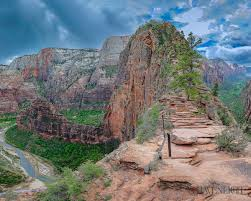
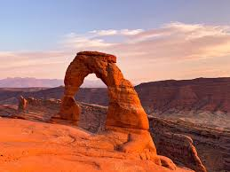
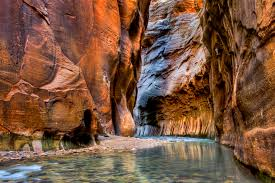
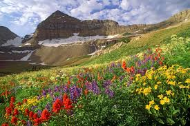
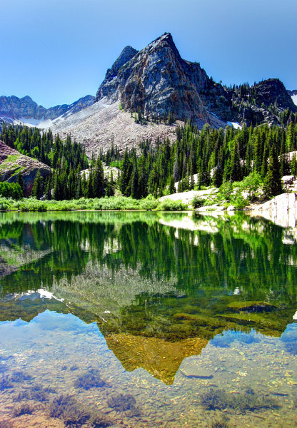

Utah Hikes
Menu
Home
About Me
World Page
More Info
Outdoors
Best Places to Hike in Utah
Angel's Landing

5 miles long with an 1,488ft elevation climb
Due to the popularity of the hike, permits are now required
Best time to go is March-October
Delicate Arch

3 miles long
Sunset is the most popular time - best time to go is for sunrise or after sunset
For little to no crowds, best time to go is in January or February
The Narrows

17 mile hike that requires a permit, but other visitors can hike only a few miles without one
Be sure to wear shoes and clothes that can get wet!
Best time to go is in the summer or early fall
Mount Timpanogos

14 mile hike that takes an average of 9 hrs to complete
Fun thing to do is to hike it for the sunrise!
Best time to go is June through October
Lake Blanche

7 mile hike that takes an average of 5 hrs to complete
Dogs aren't allowed on this trail
Best time to go is June through October